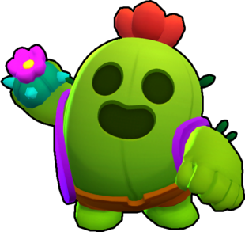

Спайк – это легендарный боец, с низким уровнем здоровья и высоким уроном вблизи, который полезен для борьбы со сгруппированными бойцами. Он уникален, тем, что урон, который он наносит на близком расстоянии, также зависит от хитбокса противника (если хитбокс больше, больше шипов может коснуться его). Его кактусовая граната взрывается при ударе о бойца или стену и стреляет шипами во всех направлениях, которые наносят урон врагам, которых они задели, а его Супер замедляет и наносит урон врагам, оказавшимся в зоне его действия.
